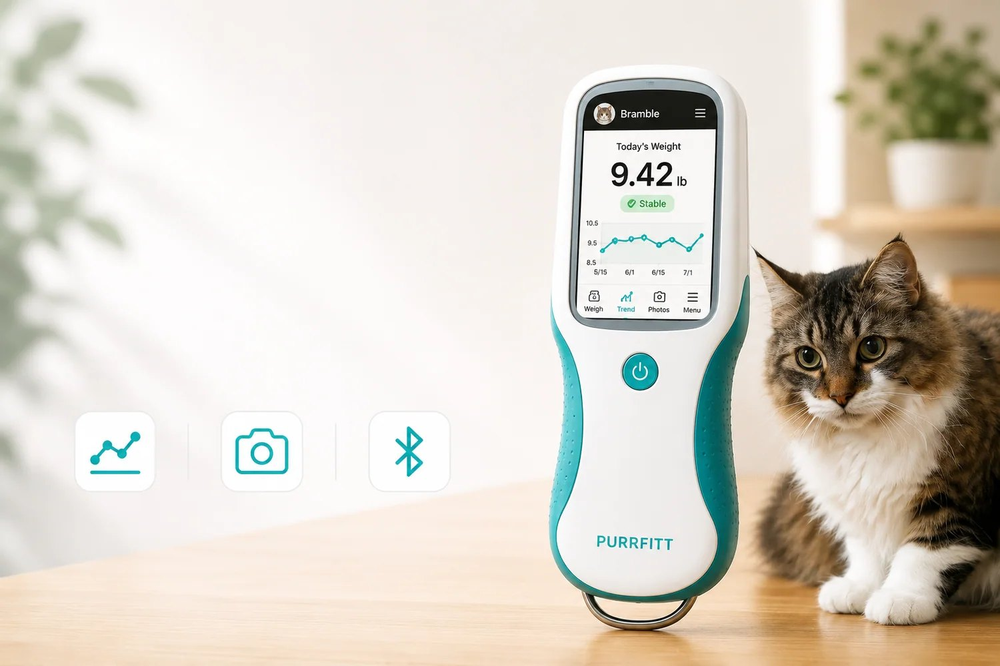
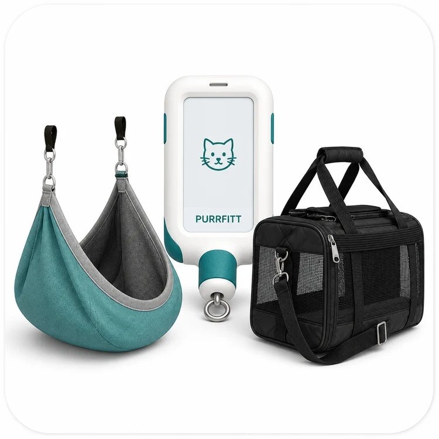

PURRFITT tracks weight trends and photos at home, so slow changes don't go unnoticed.
No Wi-Fi · No subscription · USB-C rechargeable · Up to 5 cats

Tap a card to see more.
Settle your cat in a hammock, carrier, or harness.
Hook on and lift. The reading locks in by itself.
Weight, date, and time are saved to your cat's profile.
WHY WEIGHT MATTERS
Cats gain or lose weight slowly, over weeks or months. Day to day, it's almost impossible to see.
A few ounces is a big share of a ten-pound cat, so small numbers can mean a real change.
A dated record gives your vet something concrete to look at, instead of a guess.
Create an account, sync your records, and ask about your cat's trend in plain language.

PURRFITT Pet Weight Tracker · weighs up to 20 kg / 44 lb
[YOUR PRICE]
PURRFITT is a home wellness tracker, not a veterinary medical device. It does not diagnose, treat, or prevent any condition. If you have concerns about your cat's health, talk to your veterinarian. Product images are renderings; the final product may differ.